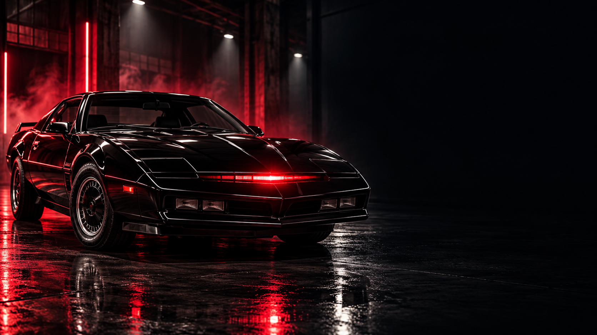

Redimensionner & convertir
Ajustez les dimensions, gardez les proportions et exportez en WebP, JPEG ou PNG.
IMAGE → WEBP · JPG · PNGRedimensionnez une image, découpez un son, repérez les scènes d’une vidéo, fusionnez des PDF ou passez du texte à RTF. KITT Media Lab rassemble cinq gestes utiles dans une application gratuite.

Choisissez l’opération, réglez les options utiles et exportez un nouveau fichier. Les limites et formats sont indiqués dans l’application.
Ajustez les dimensions, gardez les proportions et exportez en WebP, JPEG ou PNG.
IMAGE → WEBP · JPG · PNGSaisissez le début et la fin en secondes pour créer un extrait WAV PCM local.
AUDIO → WAV PCMExtrayez 6, 9 ou 12 vignettes horodatées pour parcourir rapidement une vidéo.
VIDÉO → PLANCHE JPEGAssemblez jusqu’à 20 fichiers PDF dans l’ordre sélectionné. Les originaux restent intacts.
PDF + PDF → PDFCréez un document Word éditable à partir d’un fichier texte ou Markdown simple.
TXT · MD → RTFVérifiez le fichier, la taille et les réglages avant de lancer chaque export.
VOUS GARDEZ LA MAINKITT Media Lab ouvre les fichiers que vous choisissez et effectue les opérations dans Microsoft Edge sur votre ordinateur. L’application n’a pas de fonction d’envoi, de compte ni de serveur de conversion. Évitez toutefois de traiter un fichier si Windows ou votre antivirus vous indique qu’il est dangereux.
Le programme s’installe dans votre profil Windows. Il ne demande pas de droits administrateur.
Ajoutez un fichier depuis votre PC, ou glissez-le dans la zone de travail.
Vérifiez les paramètres puis récupérez le nouveau fichier dans Téléchargements.
Installeur autonome x64 · Microsoft Edge est utilisé pour afficher l’application. Aucun compte, clé API ni connexion au Jetson/AGX n’est nécessaire.
Oui, l’application est proposée gratuitement par KITT Franco-Belge / By Manix.
WebP/JPEG/PNG pour les images, WAV PCM pour l’audio, JPEG pour les planches vidéo, PDF pour les fusions et RTF pour les fichiers texte.
Les codecs disponibles dans Microsoft Edge varient. Une vidéo ou un audio peut être refusé si son codec n’est pas pris en charge, même si l’extension paraît correcte.
Non. Cette version communautaire n’a pas de signature de code; Windows SmartScreen peut donc demander une confirmation. Vérifiez que le nom du fichier correspond à celui indiqué sur cette page.
L application est téléchargeable et utilisable gratuitement, mais le code KITT reste couvert par les conditions publiées. Les bibliothèques tierces ont leurs licences propres.